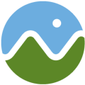
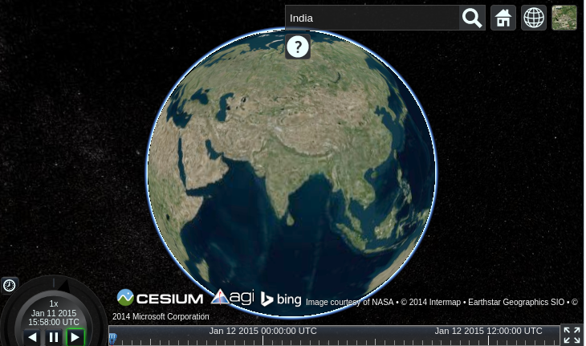
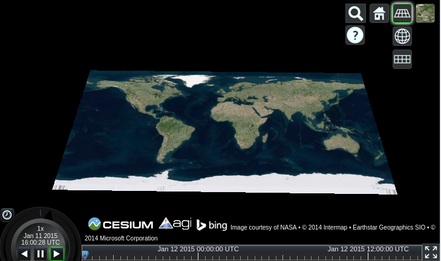
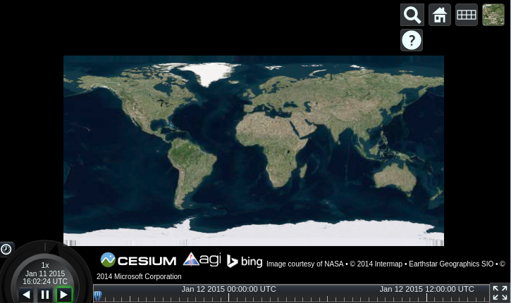
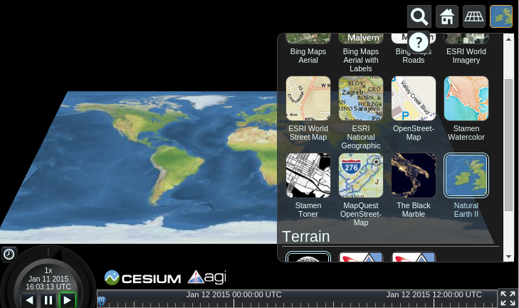

Cesium gyorstalpaló¶
A Cesium egy böngészőből további modulok nélkül használható JavaScript könyvtár 3D-s földgömbök és 2D-s térképek létrehozására. WebGL-t használ a hardver gyorsított grafikához, platform- és böngészőfüggetlen és a dinamikus adatmegjelenítésére hangolták.
Ez a dokumentum bemutatja hogyan használjuk a Cesium-ot 3D-ben (földgömb), 2.5D-ben (Kolombusz nézet) és 2D-ben (térkép).
Cesium indítása¶
Indítsa el a böngészőt és nyissa meg a http://localhost/cesium/Apps/HelloWorld.html oldalt
Hely keresése¶
A nagyítóra kattinthat és írja be a helyet, amit keres. A következő képen Indiát keressük.


Váltás 3D, 2.5D és 2D között¶
A drótvázas földgömb ikonra kattintva kiválaszthatja a megfelelő nézetet. Itt a 2,5 D Columbus nézetet választottuk.


Most a 2D térképet választjuk.


Kép réteg kiválasztása¶
Kattintson az utolsó ikonra és kiválaszthatjuk kép szolgáltatás típust. Itt a Natural Earth II-t választottuk és láthatja hogyan változott meg a térkép képe.


Mi a következő?¶
Nézze meg a video oktatóanyagunkat.
Olvassa el a szöveges oktatóanyagainkat <https://cesium.com/docs>`_.
Néhány gyors alkalmazást fejleszthet a Sandcastle honlap használatával. Sandcastle általában a legjobb módja a Cesiumról tanulásnak és minden kód példa hasznos erre a célra.
A Cesium Fórum egy remek hely, a válsz megkeresésére a gyakori kérdésekre, és korábban még fel nem tett kérdések beküldésére.
Részletes dokumentáció érhető el helyileg az OSGeoLive csomagban.